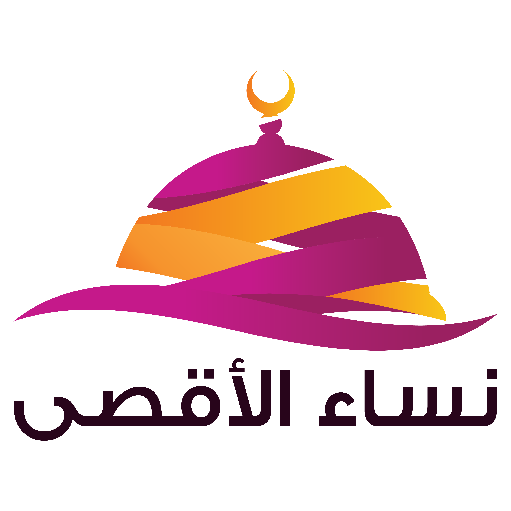

جمعية نساء الأقصى الدولية هي منظمة إنسانية غير ربحية تأسست بهدف دعم المرأة والطفل في المناطق المحتاجة حول العالم. تعمل الجمعية على تنفيذ مشاريع إغاثية وتعليمية وتنموية في عدة دول، مع التركيز على تمكين المرأة ورعاية الأيتام وتقديم المساعدات الإنسانية للأسر المتضررة من الأزمات والنزاعات.
يقع المقر الرئيسي لجمعية نساء الأقصى الدولية في مدينة شانلي أورفا بتركيا. كما تمتلك الجمعية مكاتب تنسيقية وفرق عمل ميدانية في عدة دول حول العالم لتنفيذ مشاريعها الإنسانية والوصول إلى أكبر عدد من المستفيدين.
نعم، جمعية نساء الأقصى الدولية مرخصة رسمياً وفقاً للقوانين التركية المنظمة لعمل الجمعيات والمنظمات غير الربحية. تخضع الجمعية للرقابة المالية والإدارية من الجهات الرسمية المعنية، وتلتزم بمعايير الشفافية والحوكمة في جميع أنشطتها ومشاريعها.
يمكنك التبرع بعدة طرق سهلة وآمنة: عبر موقعنا الإلكتروني باستخدام بطاقة الائتمان أو الخصم المباشر، أو من خلال التحويل البنكي إلى حسابات الجمعية الرسمية، أو عن طريق زيارة مكاتبنا شخصياً. كما يمكنك التواصل معنا هاتفياً للاستفسار عن طرق التبرع المتاحة في بلدك.
نلتزم بأعلى معايير الشفافية في إدارة التبرعات. يتم توجيه الجزء الأكبر من تبرعك مباشرة إلى المشروع الذي اخترته، مع تخصيص نسبة محدودة جداً لتغطية التكاليف الإدارية والتشغيلية اللازمة لضمان وصول المساعدات بكفاءة. نقدم تقارير دورية مفصلة عن كيفية إنفاق التبرعات.
بشكل عام، لا يمكن استرداد التبرعات بعد تخصيصها للمشاريع، حيث يتم صرفها مباشرة على المستفيدين. ومع ذلك، في حالات استثنائية وإذا لم يتم صرف التبرع بعد، يمكنك التواصل مع فريق الدعم لمناقشة حالتك الخاصة وسنبذل قصارى جهدنا لمساعدتك.
برنامج كفالة الأيتام يتيح لك رعاية يتيم من خلال دعم مالي شهري يغطي احتياجاته الأساسية من غذاء وملبس وتعليم ورعاية صحية. يتم اختيار الأيتام بعناية من خلال فرقنا الميدانية، ونوفر لك تقارير دورية عن حالة اليتيم المكفول وتطوره الدراسي والصحي.
تختلف تكلفة الكفالة حسب الدولة ومستوى المعيشة فيها، وتبدأ من مبالغ ميسّرة شهرياً تغطي الاحتياجات الأساسية لليتيم. يمكنك زيارة صفحة كفالة الأيتام للاطلاع على التفاصيل المحدّثة، أو التواصل معنا للحصول على معلومات أكثر تفصيلاً حسب الدولة المستهدفة.
نعم، نحرص على بناء علاقة تواصل بين الكافل واليتيم المكفول. نوفر تقارير دورية تتضمن صوراً ومعلومات عن اليتيم، كما يمكنك إرسال رسائل وهدايا له من خلالنا. في بعض الحالات وحسب الظروف الميدانية، يمكن ترتيب زيارات شخصية بالتنسيق مع فرقنا المحلية.
يمكنك التطوع معنا بسهولة من خلال زيارة صفحة التطوع على موقعنا وملء نموذج التسجيل بمعلوماتك الشخصية ومهاراتك وخبراتك. سيقوم فريقنا بمراجعة طلبك والتواصل معك لتحديد المجال الأنسب لمهاراتك ورغباتك ضمن مشاريعنا المختلفة.
نعم، لدينا العديد من فرص التطوع عن بُعد في مجالات متنوعة مثل التصميم الجرافيكي، الترجمة، كتابة المحتوى، إدارة وسائل التواصل الاجتماعي، البرمجة وتطوير المواقع، والتدريب والتعليم عن بُعد. نرحب بالمتطوعين من جميع أنحاء العالم.
نرحب بجميع الراغبين في التطوع بغض النظر عن مؤهلاتهم الأكاديمية أو خبراتهم المهنية. الشرط الأساسي هو الرغبة الصادقة في العطاء والالتزام بالمهام الموكلة إليك. نوفر برامج تدريبية وتأهيلية للمتطوعين الجدد لتمكينهم من أداء مهامهم بكفاءة وفعالية.
لا تتردد في التواصل معنا مباشرة وسنسعد بمساعدتك والإجابة على جميع استفساراتك.
تواصل معنا